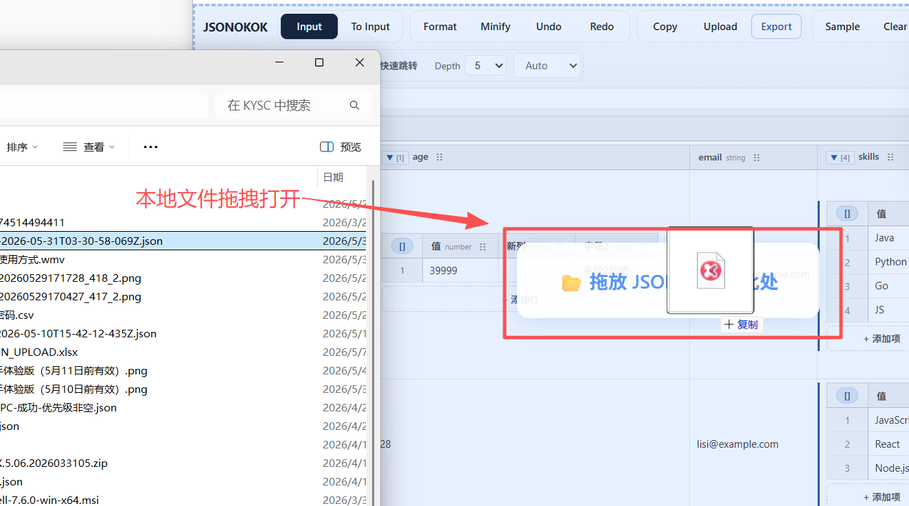
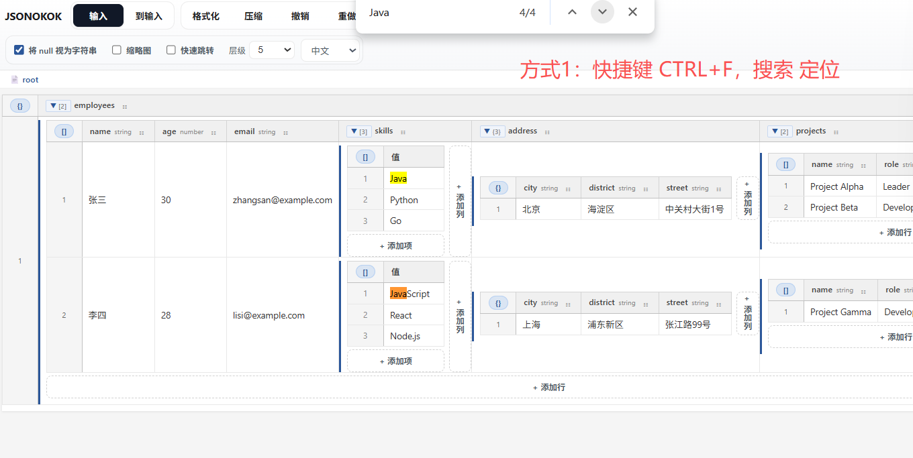
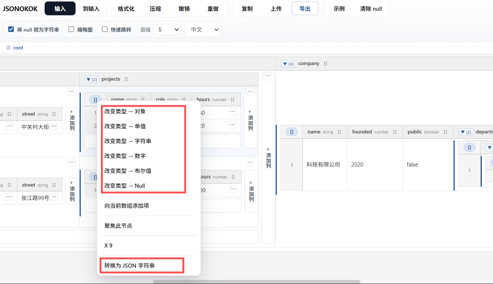
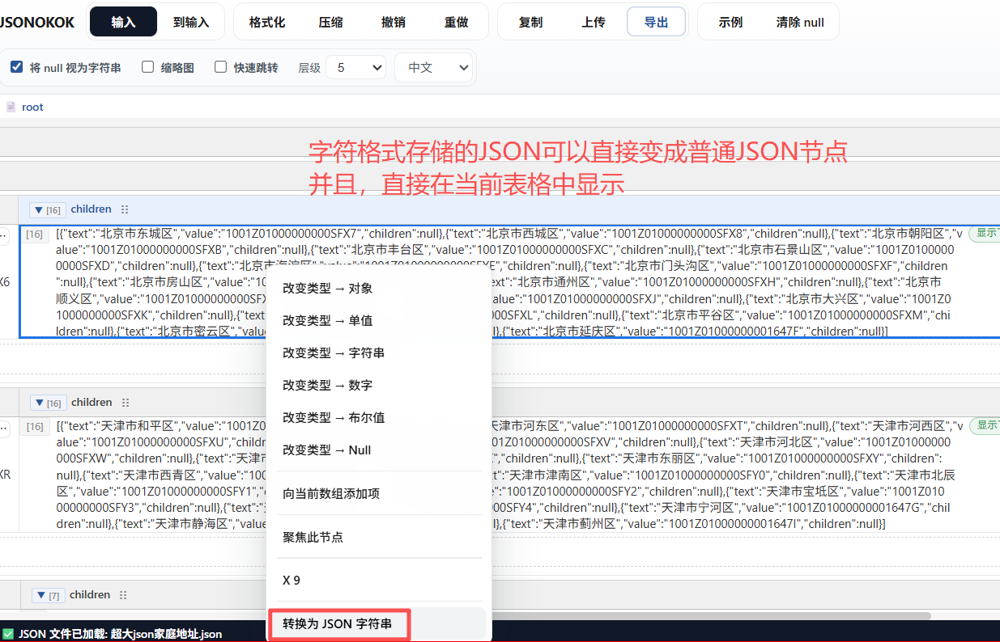
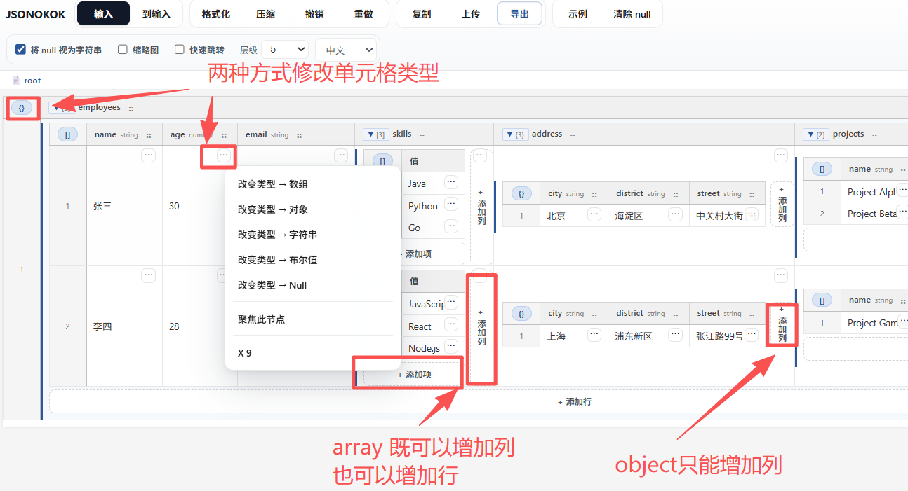
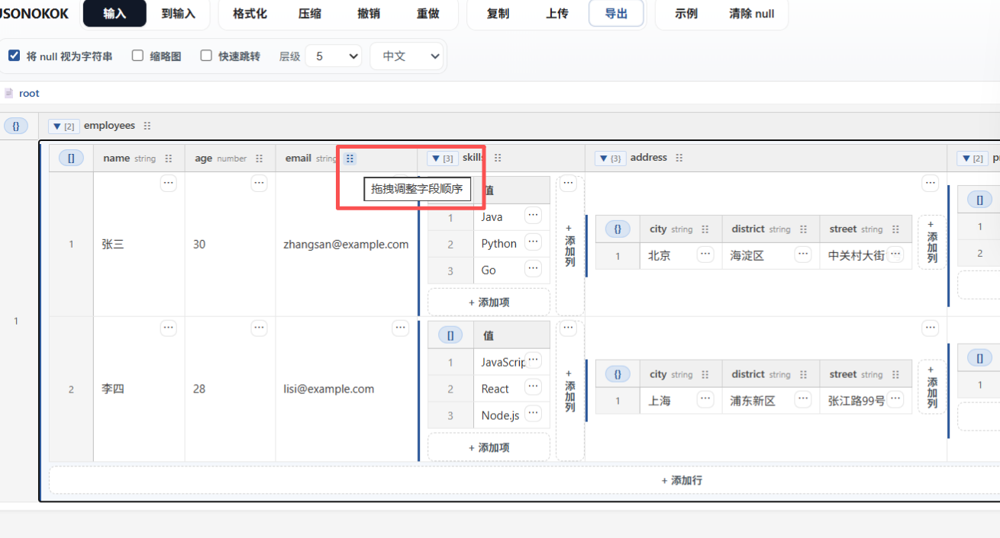
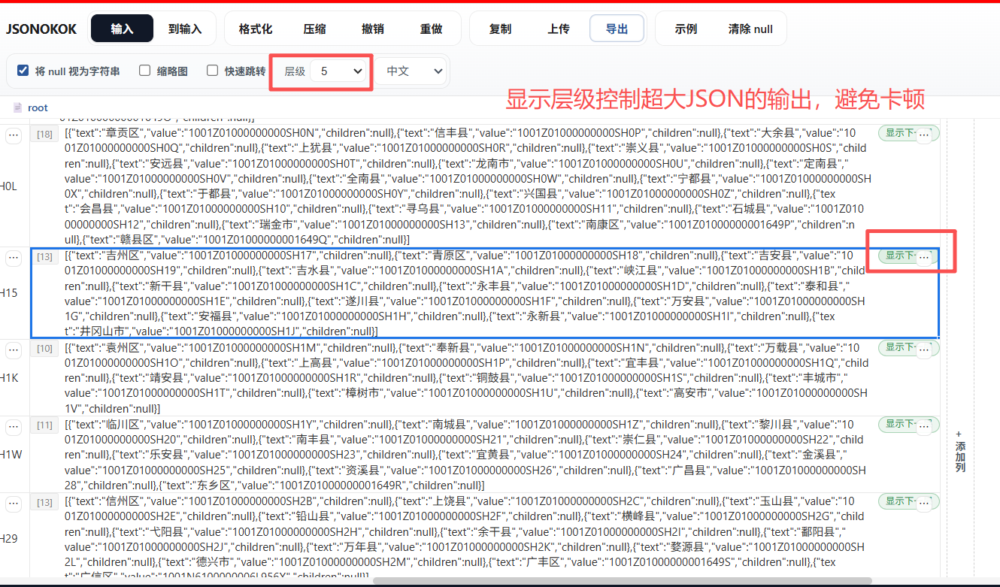

JSONOKOK 帮助
JSONOKOK 是一个类 Excel 的 JSON 可视化编辑器，适合查看深层 object / array 结构、快速定位节点、在表格里直接改值和改类型。 这个帮助页是轻量版单文件文档，只保留实际说明和截图，方便扩展打包时减少体积。
VSCODE plugin JSONOK
在 VS Code 中使用 JSONOK 插件的演示截图：

总体介绍
类似 Excel 的树形结构展示 JSON，可以一边看结构，一边直接在单元格里编辑内容。
{
"字段1": "AAAAA"
}

如何打开 JSON
- 右键当前 JSON / JS / TS 数据，选择 JSONOK 打开。
- 支持拖拽本地文件、直接在输入面板粘贴、或从当前编辑器内容打开。
- 输入面板和表格视图可以来回同步，适合快速修正。



导航
- 小地图可以快速定位到大画布中的任意区域。
- 右键节点可以聚焦当前子树，面包屑可快速返回上层。
- 支持 Ctrl 加鼠标框选、拖动画布和拖拽字段顺序。


搜索定位
- 浏览器内搜索：快捷键 Ctrl + F。
- 快速跳转：打开快速跳转窗，输入 key / value / path 搜索并点击定位。


可视化编辑
- 支持把单元格直接切换成对象、数组、字符串、数字、布尔值、Null。
- 支持字符串形式保存的 JSON 转成普通节点并直接展开查看。
- 支持增加行、增加列、双击修改列标题、拖拽调整列顺序。




超大 JSON 性能优化
- 通过层级限制和“显示下一层”控制超大 JSON 的渲染范围，减少卡顿。
- 仍可在局部范围继续编辑，不需要一次性展开全部内容。
